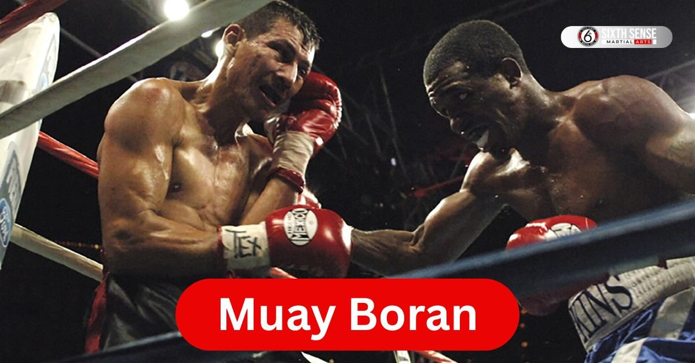
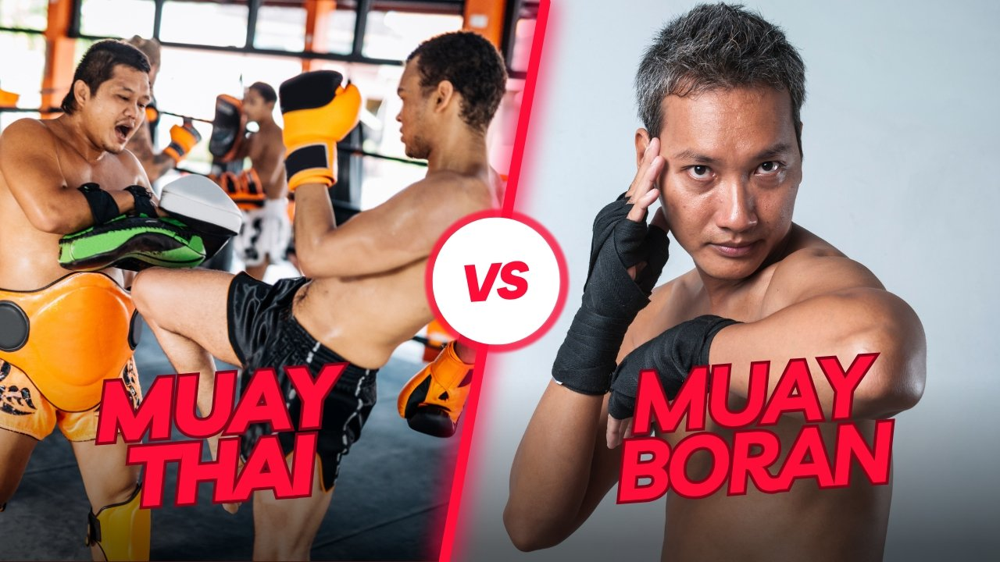

Muay Boran: The Ancient Martial Art Behind Muay Thai

Ever wondered what makes muay boran so special? Well it’s the ancient martial art that laid the foundation for muay thai the sport we all know today. Originating in Thailand this fighting style goes way back blending tradition with some pretty intense moves. People often see muay thai on TV but muay boran is its older tougher cousin. It’s all about self-defense and real-world applications not just a ring show. Back in the day Thai people used it to protect themselves and it’s still respected for its deadly techniques. Let’s dive into what makes this art tick and why it’s worth knowing about.
What Is Muay Boran?
So what exactly is muay boran? Picture a martial art that’s raw and practical designed for survival. Unlike muay thai which became a combat sport muay boran focuses on fighting style that’s all about effectiveness. It comes from Thailand and includes moves like elbow strikes and grapples. This art of eight limbs uses fists elbows knees and shins making it versatile. Historically it was taught to the Thai military for use in warfare showing its roots in real combat. Today folks learn muay boran to connect with Thai culture and build strength. It’s less about rules and more about instinct.
Roots as the Predecessor of Muay Thai
Muay boran holds a special place as the predecessor of muay thai. Long ago Thai boxers practiced this style before modern rules came along. It started in central Thailand where warriors needed a fighting system that worked. King Rama V saw its value and kept it alive passing it down through generations. Over time muay thai evolved with boxing gloves and fewer rules but muay boran stayed true to its ancient martial art roots. Many muay thai fighters trace their skills back to this original form making it a key part of Thai history.
Features of This Martial Art
- Uses a wider stance for balance and power.
- Includes flying knees and elbow strikes for offense.
- Relies on counterattack moves to turn defense into attack.
- Wraps hands and forearms in hemp rope for protection.
- Focuses on grapple techniques to control opponents.
- Teaches wai kru a traditional respect ritual before fights.
- Emphasizes real-world applications over sport rules.
History of Muay Boran
Curious about where muay boran came from? This martial art has a rich past that’s tied to Thailand’s story. It wasn’t just a hobby; it was a way to survive. Over centuries it shaped how people fought and trained. Even famous muay boran fighters were highly respected for their skills. Later leaders like King Rama VII modernized the Thai martial arts paving the way for today’s versions. It’s cool to see how this combat art evolved blending tradition with new ideas. Let’s explore its journey step by step.
Early Origins in Thailand
Muay boran kicked off in Thailand centuries ago. Back then Thai people needed a way to defend themselves especially in central Thailand. Masters of different styles like muay chaiya and muay korat developed techniques for the Thai military. They used fists and krabi krabong weapons making it a complete fighting system. Nai Khanomtom a legendary figure showcased its power in battles. This early form had fewer rules focusing on deadly techniques that worked in real fights. It’s where the heart of Thai boxing began.
Evolution into Modern Muay Thai
From muay boran came the shift to modern muay thai. Around King Rama VII’s time changes started happening. He modernized the Thai martial arts adding boxing gloves and structured rules. Hands and forearms in hemp rope gave way to safer gear turning it into a combat sport. Muay thai boran faded as a battlefield art but influenced today’s Thai boxers. Now you see it in muay thai gyms worldwide with a nod to its ancient roots. The transition shows how tradition adapts to new times.
Muay Boran Techniques
Want to know how muay boran stands out with its moves? This martial art packs a punch with techniques that go beyond the ring. Developed in Thailand it’s all about practical skills for real fights. Let’s break it down step by step so you can see what makes it tick. Practitioners back then relied on these methods to survive and they still hold up today. you’re into martial arts or just curious these techniques show the depth of muay boran.
Strikes and Weapons Used
- Start with elbow strikes a key move to hit hard and fast.
- Move to flying knees launching upward to catch opponents off guard.
- Include fist punches using a strong grip for power.
- Add krabi krabong traditional weapons like swords for combat.
- Finish with forearm blocks protecting yourself while striking back.
These strikes come from Thailand’s fighting history where muay boran was a lifeline. Each one builds on the art of eight limbs making it versatile and tough.
Grappling and Throws
- Begin with grapple holds to control your opponent’s body.
- Follow with a throw using their momentum to take them down.
- Practice a lock to pin them effectively.
- Add a sweep to knock them off balance.
- End with a counterattack to turn defense into offense.
Grappling in muay boran comes from its roots in Thai military training. It’s less about sport and more about dominating in a real fight. You can feel the intensity in every move.
Muay Thai and Muay Boran Differences
Ever wondered how muay thai and muay boran stack up? They share roots in Thailand but took different paths. Muay boran is the older martial art built for survival with fewer rules. Muay thai on the other hand turned into a combat sport with clear guidelines. Both use similar moves but the focus shifts depending on the goal. People often mix them up but the history tells a different story. Let’s explore what sets them apart and why it matters.
Rules and Sport Aspects
Muay thai has strict rules to keep fights safe. Rounds are timed and boxing gloves protect hands. Referees watch closely to stop fouls. Muay boran though had no such limits fewer rules meant anything went in battle. Thai boxers today compete for points while muay boran practitioners aimed to win wars. This shift shows how muay thai became a modern sport leaving muay boran’s raw edge behind.
Training Focus Areas
Training for muay thai hones skills for the ring. You work on speed and scoring hits with a boxer’s mindset. Muay boran training dives deeper into self-defense and real-world applications. It builds strength for unpredictable fights not just matches. Both styles shape martial art skills but muay boran pushes for survival over sport glory. It’s a different vibe depending on what you aim for.

Benefits of Learning Muay Boran
Thinking about picking up muay boran? This martial art offers a ton of perks that go beyond just looking cool. Coming from Thailand it builds your body and mind in ways you might not expect. People who train often feel stronger and more confident after a while. It’s not just about punches and kicks; it’s a full package. you want to stay fit or learn to protect yourself muay boran delivers. Let’s check out what you can gain from sticking with it.
Physical Fitness Gains
Training in muay boran works your whole body. You’ll build muscle with every elbow strike and grapple. Stamina shoots up as you practice those intense sessions. Flexibility improves too thanks to the wide stance and kicks. Plus it burns calories fast helping you stay in shape. Over time you’ll notice a tougher core and better balance. It’s like a workout that doubles as a martial art lesson.
Mental and Self-Defense Skills
Muay boran does wonders for your head too. It sharpens focus as you learn moves like flying knees. Confidence grows when you master self-defense techniques. You’ll feel ready to handle tough spots with calm. This martial art teaches you to read situations a skill that sticks with you. It’s not just physical; it’s about feeling secure wherever you go.
How to Learn Muay Boran
Ready to jump into muay boran? Getting started is easier than you think even if you’re new to martial arts. In Thailand this art has been passed down for ages and now you can join in. You don’t need to be a pro right away just start small. Finding the right path takes a bit of effort but it’s worth it. Let’s walk through how you can begin and grow with this amazing style.
Basic Training Methods
Start with simple drills to get the hang of muay boran. Practice basic punches and blocks to build a foundation. Add some footwork to move like a Thai boxer. Shadowboxing helps you perfect your form at home. Pair that with partner exercises to test your skills. Consistency is key do a little each day and you’ll see progress. It’s a steady way to learn this martial art.
Finding a Qualified Instructor
Look for a teacher who knows muay boran inside out. Check if they’ve trained in Thailand with real masters. Ask around or search online for local classes with good reviews. Visit a few sessions to see if the style fits you. A solid instructor will guide you through techniques and keep you safe. Take your time to find the right fit it makes all the difference.
Styles Within Muay Boran
Did you know muay boran isn’t just one style? This martial art from Thailand splits into different flavors each with its own vibe. These styles come from various regions and reflect how Thai people adapted it over time. you prefer a defensive approach or raw power there’s something for everyone. It’s fascinating to see how each version builds on the art of eight limbs. Let’s take a look at the main styles that make muay boran so diverse.
Muay Chaiya Approach
Muay chaiya focuses on defense and precision. Originating in Thailand it uses a tight guard to block strikes. Fighters move with a smooth flow dodging attacks like a dance. This style leans on elbow techniques to counter fast. It’s great for those who want to learn muay boran with a strategic edge. Many practitioners love its graceful yet tough nature.
Muay Korat Style
Muay korat brings raw strength to the table. Coming from Thailand’s Korat region it’s all about power punches. Fighters stand tall using their fists to dominate. This style suits those who like a direct forceful martial art approach. It’s been a favorite among Thai boxers for its bold moves. You’ll feel the intensity in every swing.
Other Regional Variations (Use bullets)
- Muay lopburi mixes quick footwork with sharp strikes.
- Muay korat adds heavy hits from a solid stance.
- Local styles include unique grapples from central Thailand.
- Some areas blend krabi krabong weapons for extra flair.
- Variations adapt to the terrain and fighter needs.
Muay Boran in Today’s World
Wondering where muay boran fits today? This ancient martial art still has a place even in 2025. It’s popping up in films and shaping Thai culture in cool ways. People are rediscovering its roots beyond modern muay thai. You might catch it in a movie fight scene or a cultural event. It’s neat to see how this old style stays alive and relevant. Let’s explore its modern role.
Role in Films and Culture
Muay boran shines in action films these days. Directors love its dramatic elbow strikes and grapples for fight scenes. It adds authenticity to stories about Thai culture. Outside movies it’s part of festivals where Thai people honor their heritage. Schools sometimes teach it to keep the tradition going. You can spot its influence in how martial arts are shown worldwide.
Our Muay Boran Classes at Sixth Sense MMA
Looking for a spot to dive into muay boran right here in Coppell? At Sixth Sense MMA we’ve woven this ancient martial art into our lineup blending it with the striking power of muay thai for a full-body experience. Our classes draw from Thailand’s rich traditions helping you connect with that old-school fighting style while building real skills. you’re kicking a bag or practicing grapples it’s all about growth in a welcoming space. Folks come from all over to train with us and it’s easy to see why our sessions feel personal not crowded. Ready to step in and feel the difference?
Program Options for All Levels
We keep things flexible at Sixth Sense MMA so everyone can jump in. Beginners start with intro classes that cover basic muay boran techniques like simple strikes and footwork in a low-pressure setup. Intermediate groups ramp up with partner drills and light sparring to sharpen your flow. Advanced sessions go deeper into styles like muay chaiya focusing on counters and endurance. Kids get age-tailored options too mixing fun games with self-defense basics. Drop in anytime our schedule runs daily and a free trial lets you test the waters without committing.
What Sets Our Training Apart
Our muay boran classes stand out because we mix tradition with modern tweaks for safety and fun. Padded floors and gear keep things injury-free unlike the raw battlefield roots back in Thailand. Small groups mean more one-on-one time so you actually pick up moves like flying knees without rushing. We throw in mental drills too like focus exercises to build that inner strength. Plus it’s tied to our bigger community vibe end class with chats over coffee next door. It’s not just training; it’s a spot to grow all around.
Why Choose Sixth Sense MMA for Muay Boran
Picking a gym for muay boran can feel tricky but Sixth Sense MMA makes it straightforward. We’re right in Coppell easy to reach and focused on turning beginners into confident practitioners. Our approach honors the martial art’s history while fitting busy lives. Students stick around because they see quick wins like better balance or handling stress. It’s more than punches it’s about that sense of belonging. If you’re tired of solo workouts come join us and see how a solid group changes everything.
Experienced Coaches and Community
Our coaches bring real fire to muay boran training. Lead instructor Matheus Galvao has years under his belt breaking down complex grapples into easy steps for all ages. Anthony Wikstrom handles the striking side drawing from muay thai roots to teach precise elbows and knees. They’re patient types always spotting what you need to improve. Then there’s the community folks from kids to adults cheering each other on sharing tips after class. It’s like family with events that keep bonds tight. You won’t feel lost here.
Comparing Sixth Sense MMA to Other Gyms (Use table format)
Shopping around for a muay boran spot in Coppell? It pays to stack up what each place offers especially when you’re after that authentic Thai martial art feel mixed with solid training. Sixth Sense MMA shines in ways that fit real lives think personalized sessions and a vibe that’s more family than factory. Other spots like Championship Martial Arts or FUEL MMA have their strengths but they lean heavier on taekwondo or general MMA without the deep dive into muay boran’s roots. Here’s a quick side-by-side on key stuff pulled from what folks say online and around town.
| Feature | Sixth Sense MMA | Championship Martial Arts | FUEL MMA |
|---|---|---|---|
| Muay Boran Focus | Strong emphasis on traditional techniques like chaiya style | Mostly taekwondo and karate light on striking arts | Broad MMA with some muay thai no specific boran |
| Class Sizes | Small groups 8-12 per session | Larger up to 20 students | Mid-sized 10-15 typical |
| Weekly Schedule | Daily options mornings to evenings | Weekday evenings mostly | Evenings and weekends focused |
| Facility Highlights | Clean L-shaped mats privacy areas next to coffee shop | Spacious with showers family-oriented setup | Basic mats and bags self-defense emphasis |
| Pricing Starting Point | $120/month unlimited | $130/month for kids/adults | $110/month entry level |
This table shows how Sixth Sense edges out with that tailored touch for muay boran lovers without skimping on convenience.
Class Quality and Schedule
Class quality at Sixth Sense MMA hits different coaches like Matheus break down muay boran moves with real patience so you actually get them right away. Schedules run smooth too with slots from early mornings for busy parents to late nights for shift workers. Compare that to Championship’s evening-heavy lineup which can clash with family time or FUEL’s weekend bursts that leave gaps during the week. Students rave about our flow keeping things fresh not repetitive and that free trial lets you feel the energy before signing up.
Facility and Equipment
Walk into Sixth Sense and it’s spotless think fresh mats quality pads for safe grapples and gear you can borrow on day one. The L-shape design gives women and newbies some quiet space to ease in plus being steps from a coffee spot makes post-class hangs easy. Other gyms like FUEL keep it functional with standard bags but miss that extra polish. Championship has showers which is nice yet our setup feels more inviting for long-term sticks. It’s the little details that make training here feel like home base.
Contact Sixth Sense MMA to Start Muay Boran Today
Got a question or ready to start your journey? Our team at Sixth Sense MMA is here for you, day or night. Located at 817 S MacArthur Blvd #100, Coppell, TX 75019, we’re just a step away. Ring us up at 469-972-7800 or shoot an email to info@sixthsensemma.com someone’s always around to chat. Need a quick answer? Drop by during our open hours, and we’ll sort you out. Our crew loves helping, whether it’s about classes or that free trial you’ve been eyeing. If any doubt pops up, don’t wait reach out, and let’s get you moving!
Conclusion
So you’ve explored muay boran from its ancient Thai roots to what Sixth Sense MMA offers today. This martial art brings a mix of strength history and practical skills that stick with you. it’s mastering strikes or joining our Coppell community the ride’s been eye-opening. You’ve seen how it differs from muay thai and how our classes stand out with personal attentionOur free trial waits no pressure just a chance to feel the power of this art. Grab it before the week ends and let’s build something lasting together. Ready to step into that ring?
Follow Us on Social Media
Stay connected with Sixth Sense MMA through our social media channels. Follow us for class updates, training tips, and a closer look at our self defense community.
FAQ’s
Muay Boran is the ancient Thai martial art that inspired modern Muay Thai. It focuses on real-world self-defense using fists, elbows, knees, and shins for powerful, practical combat.
Muay Boran emphasizes survival techniques and self-defense, while Muay Thai evolved into a sport with rules, gloves, and scoring. Boran is raw and traditional—Thai boxing’s original form.
Muay Boran includes regional styles like Muay Chaiya for defense and Muay Korat for power. Each style reflects different Thai regions and fighting strategies developed through history.
Muay Boran techniques include flying knees, elbow strikes, grapples, throws, and sweeps. Some forms even integrate Krabi Krabong, a traditional Thai weapon style, for full combat readiness.
Absolutely! Sixth Sense MMA offers beginner-friendly Muay Boran classes in Coppell. You’ll start with basic strikes, stance, and footwork before progressing to more advanced techniques.
Train with us in Coppell
The first class is free. Shorts, a t-shirt and a water bottle. We lend the rest.
Book a free class